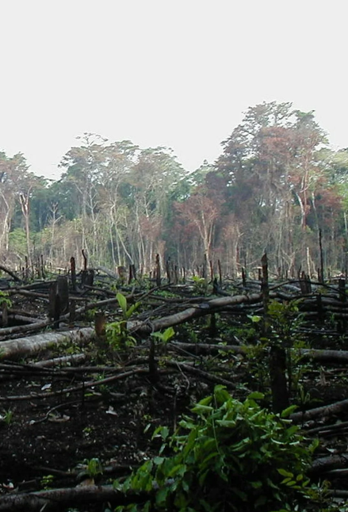
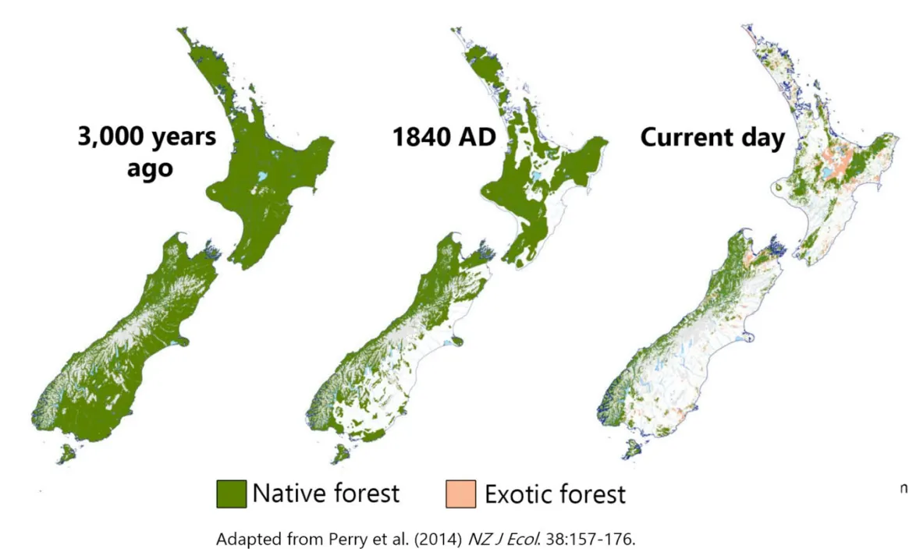

Deforestation is the high volume removal of trees and plant life in order to repurpose the land. It may be used for a multitude of different things such as, property development and resource extraction.

Over the years there has been a dramatic decrease in the native forest and bush of New Zealand. According to the victoria university of Wellington, "For indigenous forests, scrub and shrubland, the net loss from 1996 to 2018 was 40,800 ha, and for indigenous grasslands it was 44,800 ha". This was only over the span of 22 years! Can you imagine how much may have been lost in the thousands of years humans have been cutting down trees?

Deforestation is not an esy problem to tackle as there are constantly people who are out there, cutting down trees, ploughing through bush and destroying our land for other purposes. The best things that we can do to help combat this is to participate in plant restoration, by going on trips to plant trees in order to re-forest areas, reduce the use of things such as paper, plastic cups and palm oil as these are all everyday things that are a result of deforestation, and finally we must do our best to respect and look after the plant life that we still have.